如果你在周末路过市中心的商场，大概率会看到这样的场景：一群年轻人为了购买两杯奶茶排起长龙，不仅因为口渴，更为了随餐饮附赠的一张镭射闪卡或亚克力立牌。从茶饮、咖啡，到快餐、3C数码，二次元IP联名似乎在一夜之间成了各大实体商业的“流量密码”。
这种动辄让点单小程序瘫痪、让线下门店限流的跨界狂欢，究竟是一场短暂的跟风炒作，还是正在重塑商业规则的长期趋势？我们将通过市场大盘、消费现象及背后隐藏的获利模型，用数据拆解二次元IP联名是如何一步步成为年轻消费的重要驱动力的。
五亿级受众与千亿级市场，给品牌留下了足够大的想象空间
任何一种商业现象的爆发，其底层必然有庞大且成熟的市场作为支撑。品牌们对二次元IP趋之若鹜，首先是因为他们看到了一个正在极速扩容、且具备极强消费意愿的“增量绿洲”。
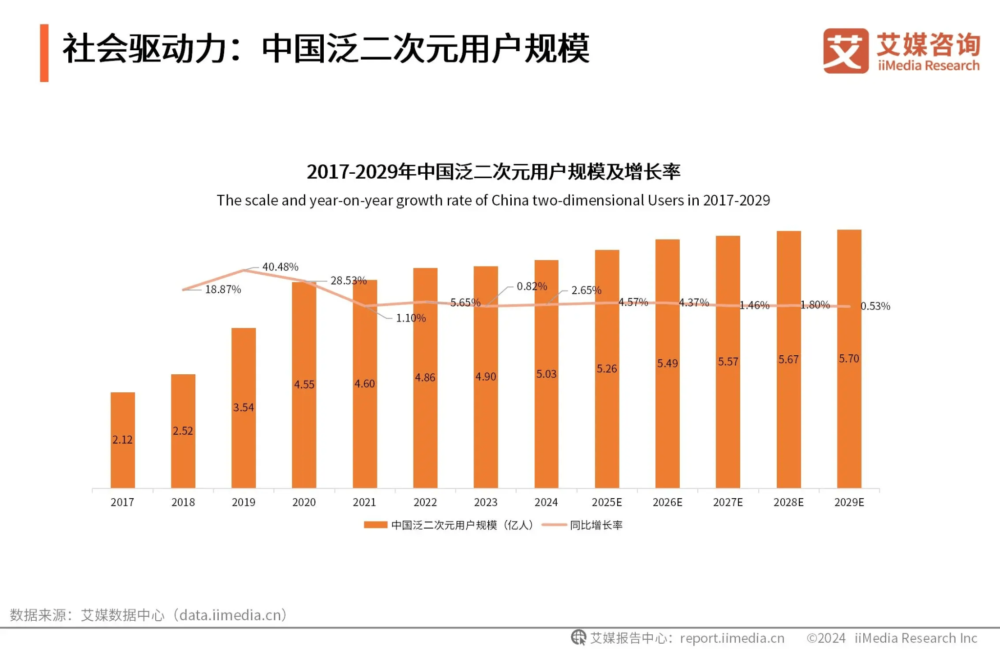
在存量竞争时代，流量的获取成本日益高昂，但二次元受众的盘面却呈现出令人瞩目的逆势增长。数据显示，中国泛二次元用户规模正经历稳健的阶梯式爬升。早在2021年，这一群体已达4.60亿人；行至2024年，用户规模突破5.03亿；而行业预估指出，2025年该群体体量将达到5.26亿人，并在2029年向着5.70亿的庞大基数迈进。这意味着，现今活跃在消费市场上的主力军中，有极高比例受到二次元文化的深度影响。
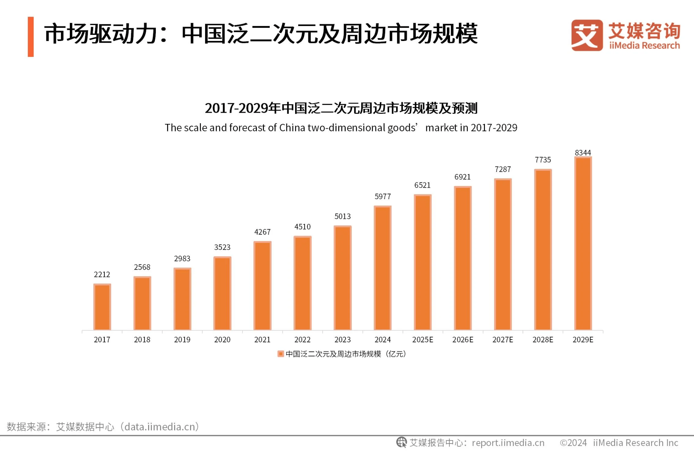
与庞大人口基数相伴的，是令人咋舌的消费爆发力。2024年，中国二次元周边及IP授权市场的核心规模已达到1689亿元，泛二次元及周边整体市场更是逼近6000亿元大关。更为关键的是，预测显示这一核心市场将在2025年突破2000亿元，并在2029年野蛮生长至3000亿元以上。从“小众圈地自萌”到“千亿级真金白银”，商业潜力的裂变速度超越了多数传统行业。
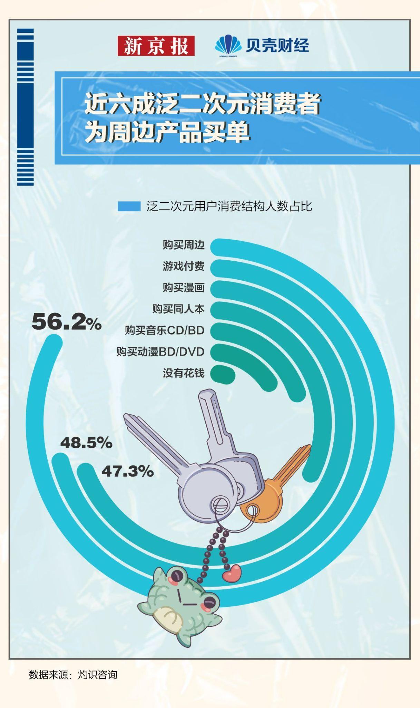
为何这群年轻人能撑起如此庞大的市场？消费结构数据揭示了他们极强的付费意愿。在泛二次元用户的消费选择中，高达56.2%的用户明确表示会“购买周边”（即圈内俗称的“吃谷”），排在首位。紧随其后的是游戏付费（48.5%）和购买漫画（47.3%）。
这组数据向品牌释放了一个极其明确的信号：这5亿多年轻人不仅热爱动漫文化，更拥有成熟的实体商品消费习惯。他们愿意为心仪的角色、高质量的衍生品持续投入。品牌入局二次元，看中的绝不仅是“二次元”这三个字自带的网络声量，而是其背后一条已经被验证、且具有极高变现转化率的新型消费赛道。
当“有多少人”和“愿不愿意花钱”两个问题都有了答案，下一步就落到了品牌最熟悉的战场：把IP放进真实消费场景。
从年度重磅到按月扎堆，二次元联名正在成为品牌标配
当千亿市场的蛋糕摆在面前，品牌是如何切入的？消费者又是否完全买账？数据告诉我们，这场联名运动已经深度渗透进了年轻人的日常生活，但也并非一帆风顺。
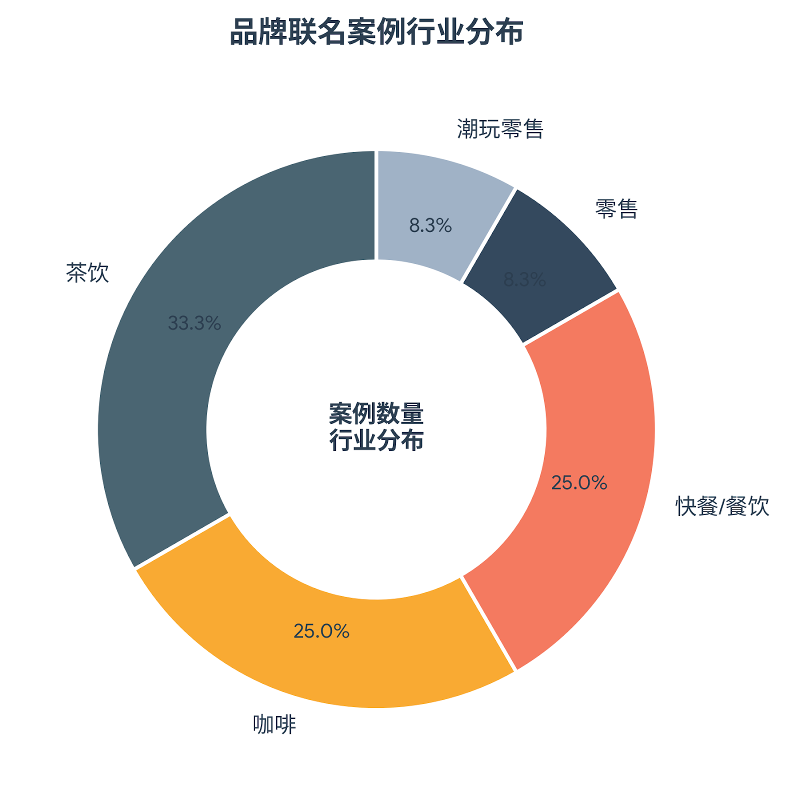
对近年来代表性品牌联名案例的行业分布进行统计，可以发现一个极度不均衡的漏斗结构。茶饮（33.3%）、咖啡（25.0%）与快餐/餐饮（25.0%）三大类目，合力占据了高达83.3%的绝对统治份额；零售与潮玩各占8.3%。
这种“吃喝为主”的格局并非巧合，而是由消费心理学决定的。茶饮与快餐具有“高频次、低客单价、极易触达”的特征。十几二十元的奶茶，辅以精心设计的IP杯套或徽章，完美充当了年轻人低成本获取“情绪价值”的出口。在高度同质化的餐饮赛道，二次元联名成为了品牌打出差异化、创造线下社交货币的最优解。
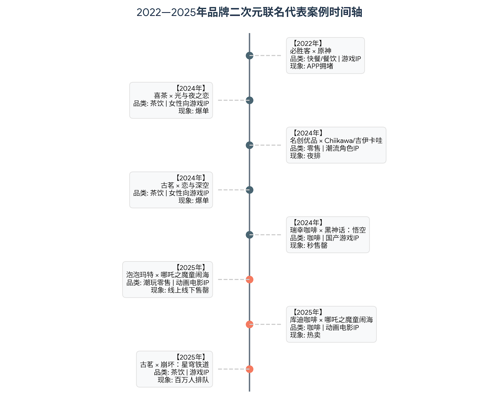
如果将视线拉长，联名的频率和密度正在经历剧烈的压缩。在品牌联名时间轴上，2022年的“必胜客×原神”尚属于具有极高壁垒的年度重磅事件。然而到了2024至2025年，各类联名呈现出“按月扎堆”甚至“同档期神仙打架”的局面。从女性向游戏（光与夜之恋、恋与深空），到萌系潮流IP（Chiikawa），再到国产游戏与动画巨制（黑神话：悟空、哪吒之魔童闹海），联名覆盖的圈层越来越垂直细分。品牌联名已然从个别节点的营销活动，发展成为日常产品上新的常态化武器。
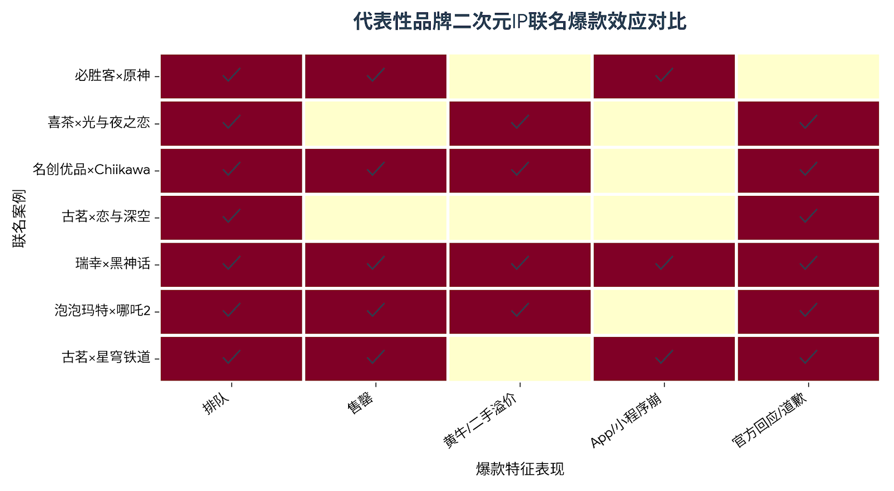
高频下场的联名，在现实中激起了怎样的浪花？在爆款现象热力图矩阵中，我们看到了极强的传播力与破坏力并存。“排队”、“售罄”和“黄牛/二手溢价”几乎标配于每一个现象级案例。而“App/小程序崩溃”这一挑战服务器并发极限的现象，也屡屡在星穹铁道、黑神话等顶流联动中上演。伴随而来的，是高达75%的案例出现了“官方回应/道歉”。这折射出巨大的热度往往会瞬间击穿品牌的常规供应链。
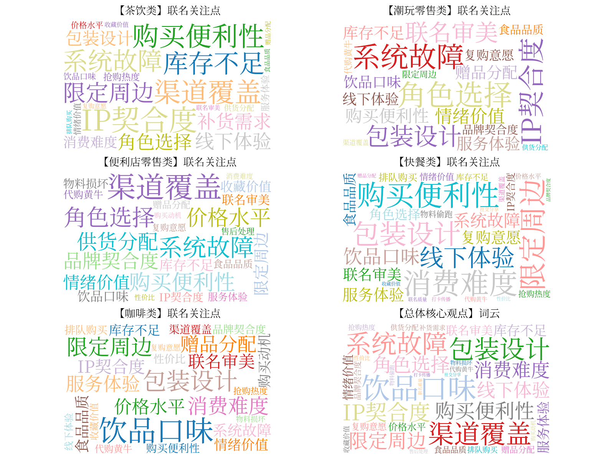
消费者真的只是一味狂热地买单吗？从四大行业（茶饮、咖啡、便利店零售、快餐）的消费者评论词云中，我们读出了年轻人的“冷思考”。在积极反馈方面，“IP契合度”、“包装设计”、“角色选择”以及“情绪价值”高频出现。这说明当下的消费者十分挑剔，单纯“贴个图”的敷衍联名早已失效，他们更看重品牌对IP的尊重与设计的走心程度。但在负面反馈一侧，红蓝相间的危机词汇同样刺眼：“系统故障”、“库存不足”、“黄牛”、“渠道覆盖”与“消费难度”成为了被频繁声讨的重灾区。这表明，虽然品牌联名赚足了眼球，但备货不均、点单崩溃、黄牛囤积周边等乱象，正在严重透支消费者的耐心。年轻人想要的是优质的消费体验，而非一场充满挫败感的“饥饿营销”。
联名越高频，问题越容易暴露。但品牌仍持续投入，说明它们看到的回报并不只停留在一次销售上。
品牌真正赚到的，是定价能力、全网声量和年轻化资产
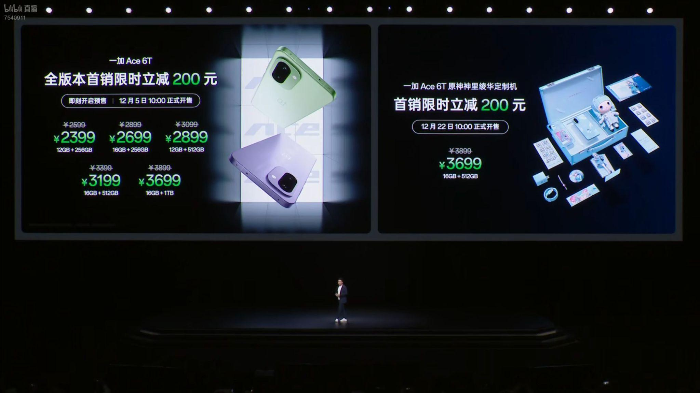
既然联名活动常常伴随被粉丝声讨的供应链风险，品牌为何依然热衷于此？探寻这个问题的答案，需要我们透过现象看本质，直击二次元IP联名背后的商业获利模型。
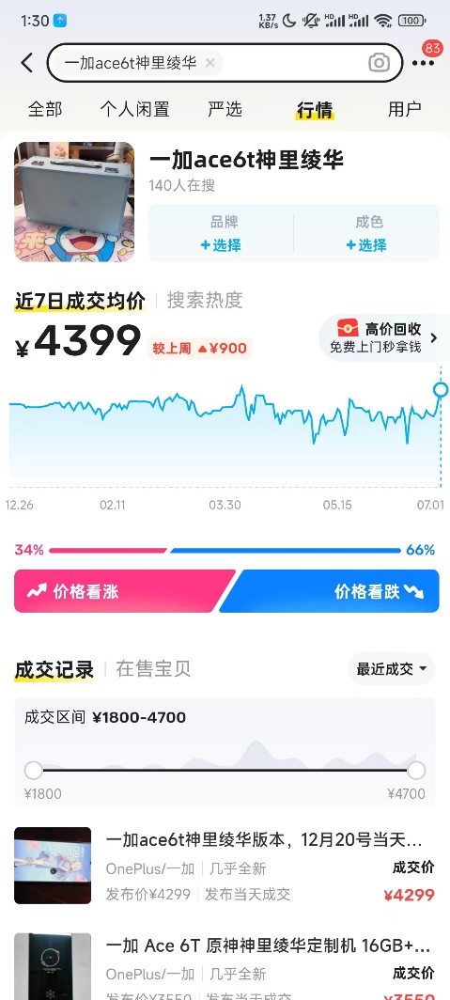
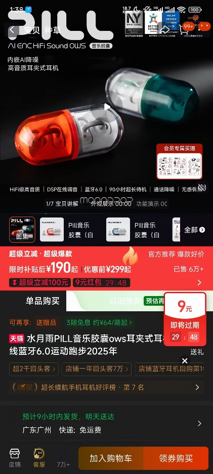
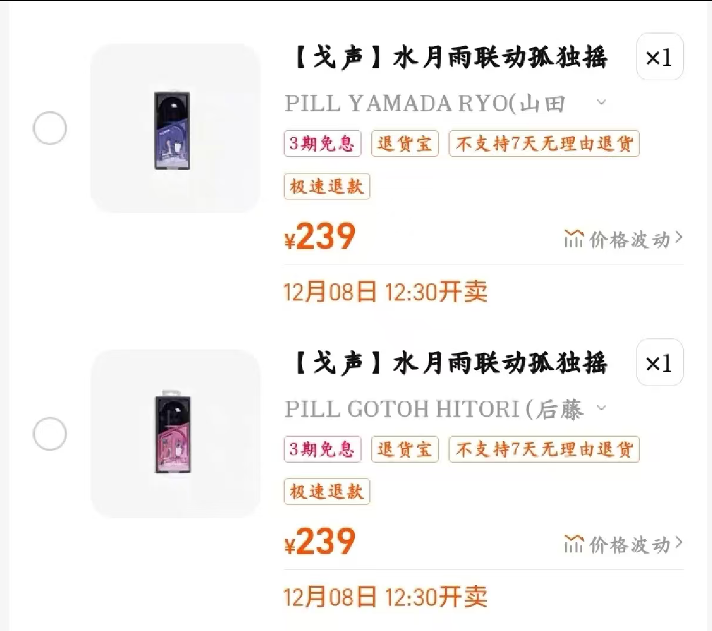
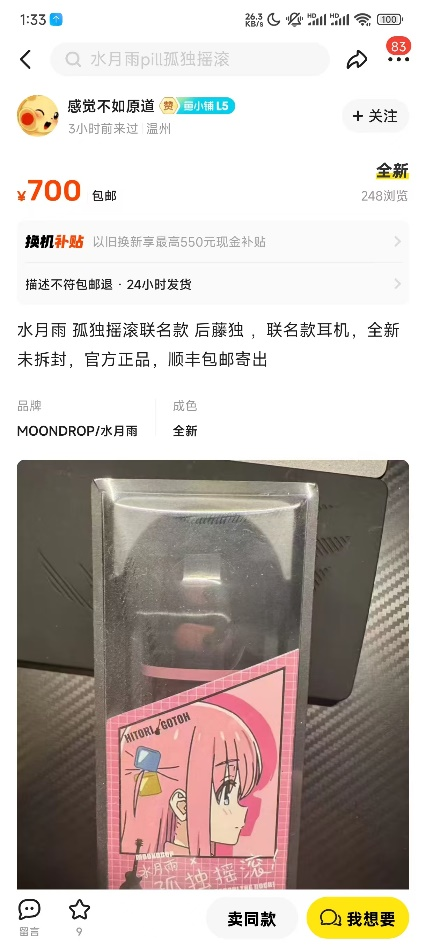
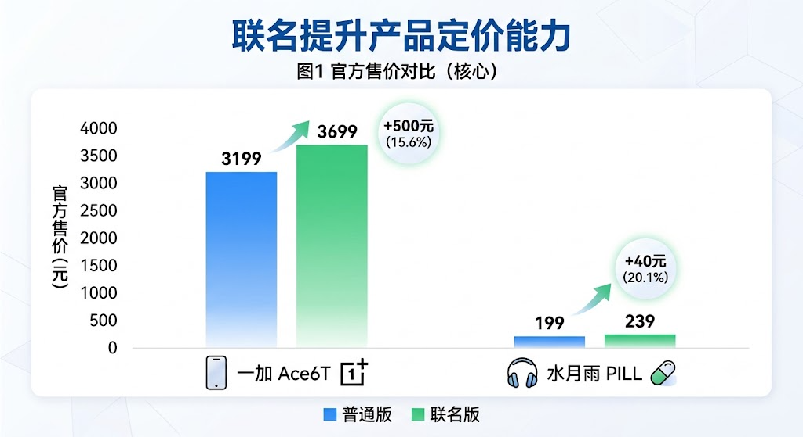
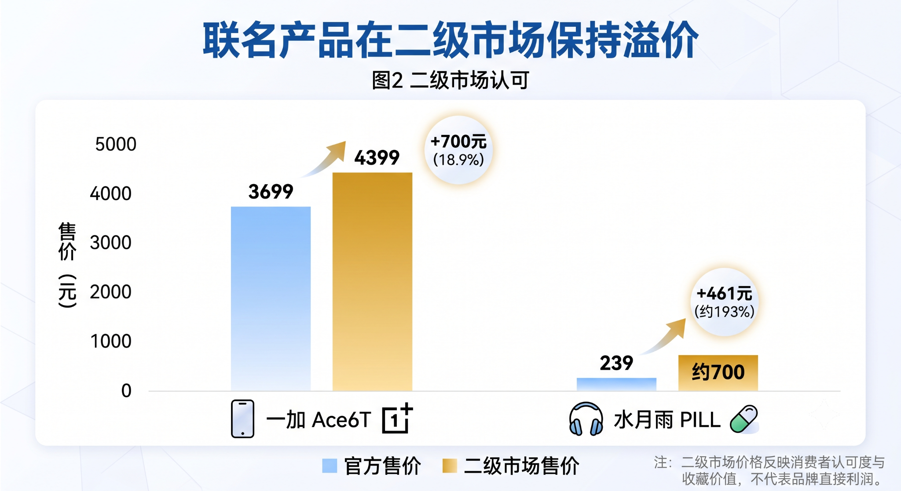
直观的数字总是最能说明问题。在官方定价层面，IP联名为产品赋予了显著的溢价空间。以数码3C为例，一加Ace6T联名版相比普通版官方售价提升了约15.6%（+500元）；而水月雨PILL耳机联名版则提升了约20.1%（+40元）。这种适度的品牌溢价，直接拉升了客单价。
但真正疯狂的在于二级市场的倒挂。原价3699元的手机在二级市场攀升至4399元（溢价18.9%）；而原价仅239元的联名耳机，在二手市场竟飙升至约700元（溢价幅度高达193%）。需要客观厘清的是：二级市场产生的高昂溢价，并没有直接流入品牌的口袋。但对于品牌而言，这绝非坏事。这种畸高的二手溢价，实际上是消费者对该联名产品“稀缺性、收藏价值与情绪认同度”的市场化投票。溢价越高，越证明市场对该次联名价值的高度认可。
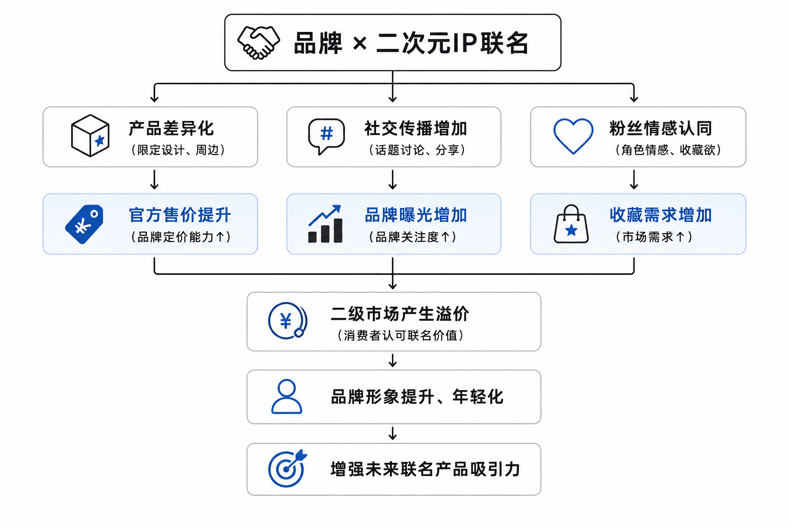
结合“品牌联名获利模型”，我们可以彻底看清这场商业游戏的完整闭环。当品牌与二次元IP进行联名（动作起点），其直接产出是产品差异化（限定设计、实体周边）以及对特定圈层的粉丝情感认同。这种认同感迅速在社交平台上发酵，形成热搜与话题（社交传播增加）。
在这三大驱动力的催化下，品牌收获了官方售价的提升（定价能力）、海量的全网曝光（品牌关注度）以及远超预期的收藏需求。当这种狂热的市场需求在短时间内爆发，便自然投射为前文提到的二级市场溢价。
通过这一套组合拳，品牌最终沉淀下来的是什么？是品牌形象的提升与年轻化。传统实体品牌借由二次元IP，成功洗刷了“老气、刻板”的固有印象，与最具消费潜力的Z世代建立了情感连接。这种深入人心的年轻化标签，又将反向增强品牌未来推出新产品的市场吸引力，形成一个不断向上生长的正向商业循环。
由此回到最初的问题：二次元IP联名并不只是一次促销，而是一套围绕年轻消费关系建立起来的商业机制。
不止于营销，更是连接未来的商业共识
综合上述数据脉络，品牌越来越喜欢联名二次元IP的动因已经完全显影。
这并非某个品牌心血来潮的短期试水，而是一场多重利好因素交织下的系统性演进。不断扩大的五亿年轻用户底座和向三千亿体量冲击的周边市场，为品牌铺设了充满想象力的消费温床；以茶饮、快餐为主的高频消费场景，构筑了品牌与消费者最高效的情感交互桥梁。
年轻一代愿意为认同的IP买单，为情绪价值付费，甚至为了稀缺性在二级市场推高溢价。在这个过程中，虽然存在着库存管理、黄牛倒卖等亟待优化的体验痛点，但瑕不掩瑜。通过二次元联名，实体品牌不仅收获了真金白银的销量转化，更实现了品牌资产的年轻化重塑，获取了极度宝贵的跨圈层用户数据。
二次元IP联名，已经彻底跨越了短线营销的范畴，成为了存量时代下，品牌理解年轻受众、连接未来消费主力、提升长期商业价值的核心战略选项。
- 艾媒数据中心、艾媒报告中心：2017—2029年中国泛二次元用户规模及周边市场规模相关数据。
- 灼识咨询：泛二次元用户消费结构人数占比相关数据。
- 新京报、贝壳财经：泛二次元消费与周边产品公开资料。
- Bilibili平台公开内容与评论区分析：品牌联名案例、爆款现象与消费者反馈整理。
- 电商平台、二手交易平台公开信息：联名产品官方售价与二级市场价格整理。